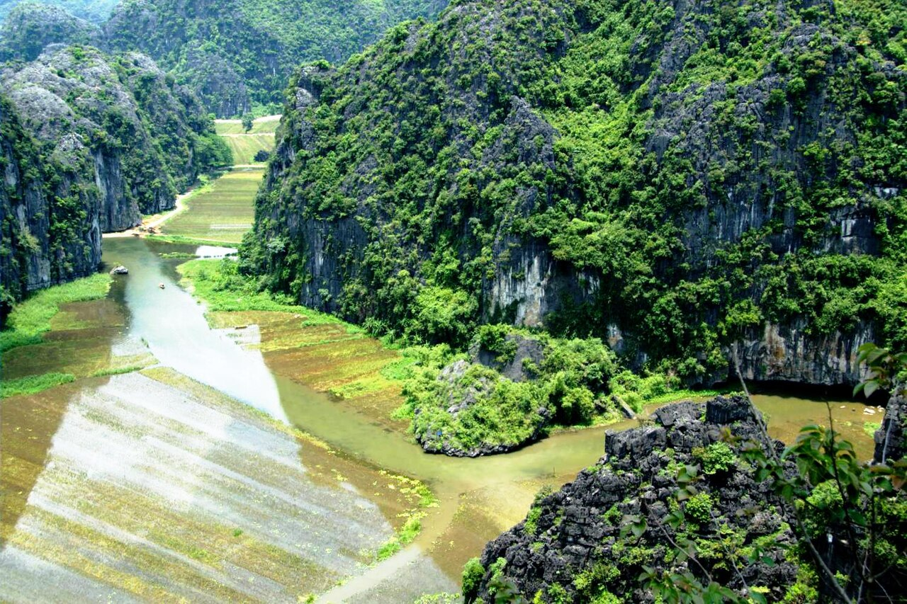
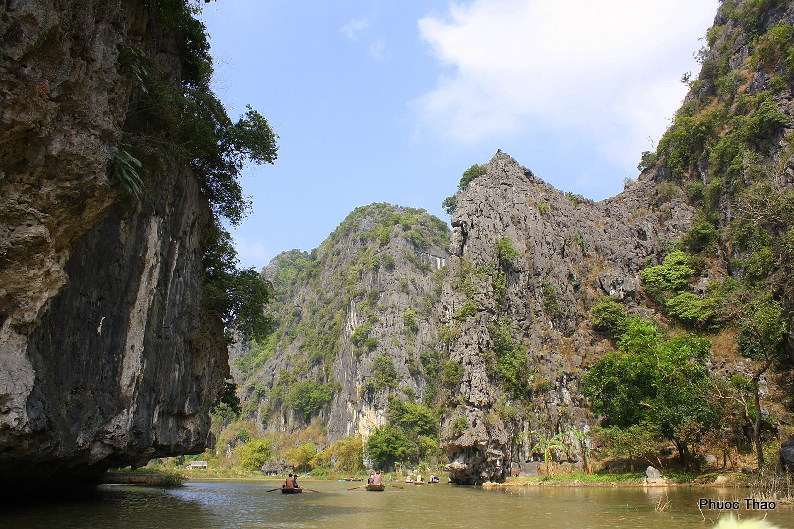

吳東河 --- 長安
-
吳東河是越南寧平省和路市寧海公社的一條小河。它是蘇溪河的支流（連接黃龍河與瓦克河）。吳東河發源於長安世界遺產群石灰岩山脈系統中心的一個低窪潟湖，起點為水井廟區，穿梭懸崖與稻田，最後注入位於Vung
Tram橋附近的Vac河系統。 它是一條連接廣闊田野與山谷的運河。
-
河邊有潭谷風景名勝，泰維寺非常美麗，是寧平著名的旅遊景點。造訪這些景點的遊客常會搭乘划艇在恩戈東河上，欣賞周圍迷人的風景。
-
Ngo
Dong河兩岸的地貌為石灰岩懸崖，擁有悠久的地質發展歷史，位於和路文化歷史森林中。河兩岸是稻田，蜿蜒於落基山脈中，有一種季節帶有色彩。它也是寧平省最有韻味的河流，距離河內約100公里，距和魯市約7公里。
- 步行、騎行及攀岩旅遊景點：碧洞山與寶塔;天洞;Mua洞穴;古老的維恩勞家族;泰維寺——天香洞......
-
潭谷-碧洞 的精彩片段：
-
潭谷（Ba Cave）：包括Ca洞（127公尺）、海洞（60公尺）及巴洞，位於和魯寧海鄉的果洞河畔。
-
穿透水洞：位於畢支山心臟地帶的水洞。
-
泰維寺廟：供奉陳王朝的場所
-
潭谷-畢東旅遊區包含多條遊艇、自行車及健行路線，連接約20個旅遊景點。度假村的主要路線：
-
郵輪航線包括：雲林碼頭航線-吳東河-潭谷;玄水洞徑（穿越碧洞底部）;Thach Bich – Sunny Valley。[4]

